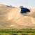
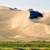
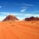
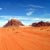

A chaque désert son voyage, ses couleurs...

Que dit le désert ? Que signifie-t-il ? Que suggère-t-il ? " Le désert est un être poétique " Voici, pour commencer, une vérité ontologique à soutenir car elle n'induit point en erreur. On ne saurait discourir sur le désert sans penser préalablement à la notion de " vide ". En effet, le premier sentiment qui s'empare de nous lorsqu'on évoque le désert, c'est le sentiment de vide.
On imagine l'espace. On imagine son immensité. On imagine sa vacuité et sa dureté. Dans l'inconscient collectif universel, le désert est notamment lié au sentiment de perte et d'errance. Il est sans conteste la métaphore de la solitude et de l'isolement. Toutefois, le désert, bien qu'il soit visiblement vide, est un espace peuplé. Il est peuplé de secrets et de métaphores qui définissent plus l'être énigmatique qu'il est que le simple espace exposé à l'oeil. Phénoménologiquement parlant, pour comprendre le désert, il faut vivre l'expérience du désert.
Top 5 des déserts
- le désert de Gobi
- La vallée de la mort
- Le désert du Sahara
- Le désert de Gibson
- Le massif des Aurés
Galeries


 

 
